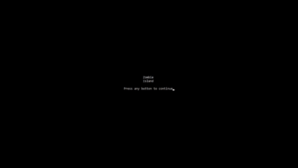

Throughout the duration of the course so far I have become skilled in C++, C# and Python with an understanding of SQL databasing. Outside of my studies I have delved into HTML and CSS to create this website and plan to begin some work in Swift for mobile app development.
C++
The first year of study at USW was largly based around the development of fundamental programming skills in the module 'C++ Programming for Game Developers', which consisted of small tests and 2 sizable courseworks:
The first of these tasks (set early in the year) was the creation of a small racing game based on 'The Tortoise and The Hare', which consisted of a race between the two animals visualised on the system console. Each animal had a set of moves with different probabilities which effected both the direction and the speed of the animal's movement. I also implemented holes as an extension to the game, where the race track had randomised holes that the animals could fall into during the race. This encumbered the participant with a small time penalty, making them unable to perform their next move until a certain number of turns had passed.

The second coursework was designed to test the C++ skills developed over the year, with a focus on the use of classes and inheritance in the form of a zombie survival game. Named 'Zombie Island', the aim of the game was to make the zombies, that were chasing the player, fall into the holes around the map without being caught. The player was also given the ability to choose the difficulty level between easy, medium and hard as well as being able to create a custom level. High scores were stored in a text file and could be displayed to the player by selecting ‘High Scores’ at the menu. Zombies had a basic AI where if they were 5 positions away from the player they would begin to pursue them, with a small probability that they would make a wrong turn during the pursuit which may allow the player to escape.
